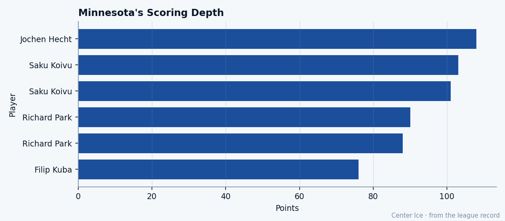

Ceiling Below Base: Tuomo Pihlman and the 19-Grade Gap at Minnesota
The Calder Trophy winner is scoring at a 106-point pace on 21.7 minutes a night, and the Bureau's potential for him sits 19 below his current grade
 Tomáš VránaProfile writer · The Sweater
Tomáš VránaProfile writer · The SweaterThe  Minnesota Wild winger finished last season with 34 points in 73 games at 12.7 minutes a night and won the Calder. This season, at 21, he has 22 points in 17 games at 21.7 minutes, a pace of 106 over 82. The Bureau's Development Index has him at +4. His base grade is 76. His potential grade is 57.
Minnesota Wild winger finished last season with 34 points in 73 games at 12.7 minutes a night and won the Calder. This season, at 21, he has 22 points in 17 games at 21.7 minutes, a pace of 106 over 82. The Bureau's Development Index has him at +4. His base grade is 76. His potential grade is 57.
That gap is 19. The ceiling sits below the floor.

What a 57 looks like
A 57 is a fourth-line winger. A depth checker who kills penalties and clears the crease and goes home happy with six minutes. The grades underneath Pihlman's 76 do not belong to that player. Shot power 85. Toughness 85. Balance 84. Checking 83. Agility 81. Puck control 81. Those are top-six attributes. A 57-ceiling player does not carry an 85 in shot power, because a 57-ceiling player never gets to the slot with the puck on his tape enough to need one.
The Bureau builds its ceiling from trajectory and age. Pihlman turned 21 in April. He has one full season and part of another in this league. His first year produced 34 points across 73 games; his second has 22 in 17, an enormous jump. But the Bureau's model reads first-year performance on limited minutes and asks what the player looks like when the sample grows and the opponents game-plan against him. That assumption of regression lands his potential at 57.
The room without Koivu
 Saku Koivu84 has been out with a shoulder since between October 29 and November 6, and the return date is November 29. That is nearly a month without the center who carried 103 points last season. Pihlman has been playing on the top wing with either
Saku Koivu84 has been out with a shoulder since between October 29 and November 6, and the return date is November 29. That is nearly a month without the center who carried 103 points last season. Pihlman has been playing on the top wing with either  Wes Walz82 or Pierre-Marc Bouchard79 down the middle, against first-line assignments, on a team sitting 4th in the Northwest at 7-8-4.
Wes Walz82 or Pierre-Marc Bouchard79 down the middle, against first-line assignments, on a team sitting 4th in the Northwest at 7-8-4.
MIN is 59 goals for, 56 against. Roughly even. They are not bad enough to tank and not good enough to threaten. Pihlman is the second-leading scorer behind  Richard Park77, who has 27 points in 21 games. The 21-year-old is 22 in 17, and the gap closes at even strength if the games even out. The roster around him is thin: the best grades among Minnesota's skaters are Koivu at 82, Walz at 82, Bouchard at 79, Park at 77. Only
Richard Park77, who has 27 points in 21 games. The 21-year-old is 22 in 17, and the gap closes at even strength if the games even out. The roster around him is thin: the best grades among Minnesota's skaters are Koivu at 82, Walz at 82, Bouchard at 79, Park at 77. Only  Manny Fernandez88 in net reads above 82.
Manny Fernandez88 in net reads above 82.
That means the winger is playing against other clubs' best defensemen every other night. At 21. With a Fighting grade of 51 and a Speed of 76, which is not what the league calls a burner. His Speed of 76 against a top-pairing defenseman's 80-plus is a losing race, so he wins his ice elsewhere: along the boards, in the slot, on the forecheck where Toughness 85 and Checking 83 keep him in plays that a lighter winger would lose.
$1.05M and 2 years left
The contract has 2 years remaining at $1.05M. If the Bureau is right and he drops toward 57, that is a bargain for a fourth-liner. If he stays at 76, or if the +4 on the Index is the start of a move that pushes the base up, then it is a steal. Minnesota has $51.77M committed against $41.29M in revenue, a loss of $10.48M. Every cheap contract that plays above its slot is worth more than the money says.
The 2004 class
Pihlman was the 9th pick. In the class that drafted him, the player taken 8th, Petr Beier, carries a potential of 99 on the Junior Bureau's board. The player taken 13th, Leo Atonovich62, carries 96. Those numbers say the Bureau saw enormous upside in the players around him on the board. In Pihlman it saw a player who would arrive fast and stop.
He arrived in his first season, 73 games and a trophy. He is arriving again in his second, at double the point rate. The Bureau's model says the line comes back down. The room says he has to be the most physical forward on that roster, carrying minutes a 21-year-old should not have yet, scoring at a pace the model's ceiling does not support.
Morale reads 95. He is not bothered.